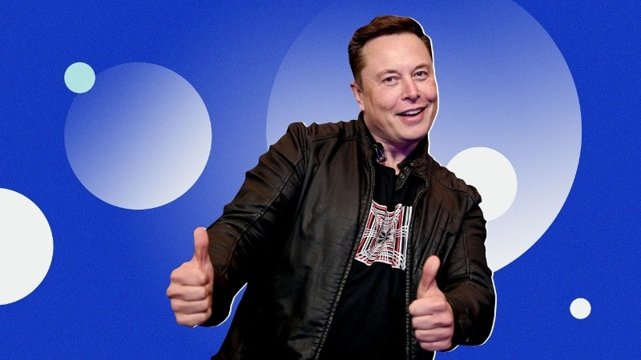

El magnate anunció, en la aplicación y en un comunicado, que la compra de la plataforma no supondrá una pérdida de libertad de expresión ni de las críticas a su figura
Elon Musk, el hombre más rico del mundo, cerró este lunes un acuerdo para comprar Twitter Inc. TWTR.N por 44.000 millones de dólares. Esta operación significa que Musk controlará la plataforma más popular de las redes actuales, donde conviven millones de usuarios y líderes políticos, sociales y económicos de todos los rincones del planeta.
Las negociaciones entre el magnate y la plataforma se aceleraron durante el fin de semana.Twitter entonces comenzó a negociar con Musk la compra de la compañía a 54,20 dólares por acción. Este lunes, Wall Street suspendió la cotización de Twitter ante el inminente acuerdo.
Antes de que se completara la operación, Musk se dirigió a sus seguidores en su red social y señaló que la compra de la plataforma no supondrá ninguna falta de libertad para criticarlo.
Además, en un comunicado, señaló: "La libertad de expresión es la base de una democracia que funciona, y Twitter es la plaza digital donde se debaten asuntos vitales para el futuro de la humanidad”.
"También quiero hacer Twitter mejor que nunca al potenciar el producto con nuevas características, convertir los algoritmos en fuente abierta para incrementar la confianza, vencer a los 'bots' de 'spam', y autentificar a todos los humanos", agregó.
Tras el anuncio, las acciones de Twitter subieron acerca de un 6%, aunque lo comprometido entre las partes indica que la plataforma del pájaro azul dejará de cotizar en bolsa.
El reporte sobre el acuerdo indica que el mismo fue aprobado de manera unánime por la junta directiva. Se espera que entre en vigor a lo largo de este año, tras la vía libre presentada por reguladores y accionistas.
El fundador de Tesla declaró en las últimas semanas que su deseo de comprar la plataforma atiende a que, según él, la plataforma está incumpliendo su compromiso para con la libertad de expresión.
En medio del proceso de negociaciones, Musk anunció algunas reformas para Twitter como la relajación de las restricciones de contenido, como la suspensión de la cuenta de Donald Trump tras las elecciones presidenciales de Estados Unidos en 2020, o la necesidad de expulsar a los bots y a las cuentas falsas.
Luego del anuncio del acuerdo entre Twitter y Musk, el expresidente estadounidense, a través de Fox News, comentó que no desea regresar a esa red social aunque las nuevas condiciones de Musk se lo permitan, que continuará utilizando la red que él mismo creó llamada “Truth”.
Con la compra del Twitter, Elon Musk seguirá engordando su fortuna, que ya cuenta, según Forbes con un valor estimado de 279.000 millones de dólares. De los mismos, la mayoría corre a cuenta de sus acciones en Tesla y SpaceX, su compañía de viajes espaciales.
